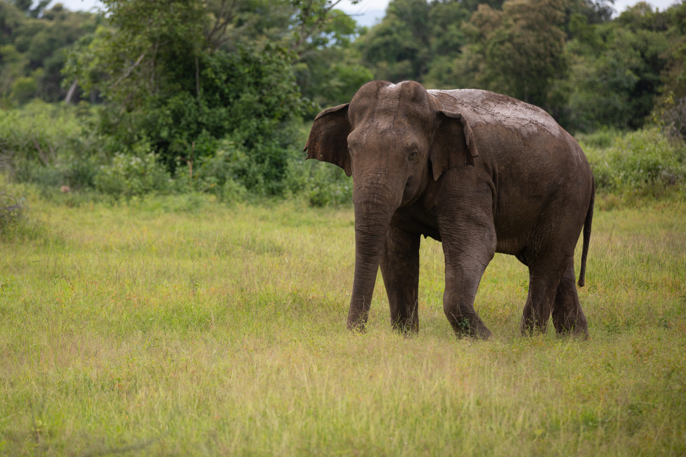
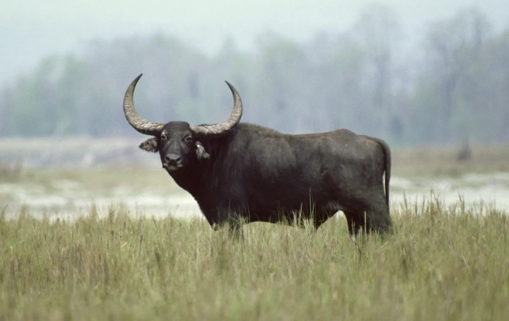
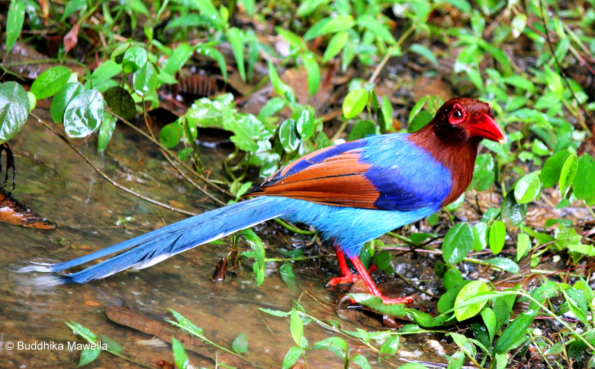

In general, Asian elephants are smaller than African elephants and have the highest body point on the head. The tip of their trunk has one finger-like process. Their back is convex or level. Females are usually smaller than males. Some males have tusks. Click here for more info


Axis deer are important prey for the Sri Lankan leopard. It is also prey for sloth bears, jackals, and crocodiles. Click here for more info

Being omnivorous, it feeds on nuts, berries, and roots, as well as carrion and meat. One of its main staples is insects, which it removes from rotting stumps and trees with its long, hairless snout. Otherwise, it rarely kills animals.Click here for more info

It has been listed as Endangered in the IUCN Red List since 1986, as the remaining population totals less than 4,000. Click here for more info

The Sri Lanka Blue Magpie (Urocissa ornate) was first described in 1829 by Wagler and is a member of the crow family – the Corvidae. Crows, ravens, rooks, jackdaws, jays, magpies, treepies, choughs and nutcrackers all belong to this family. Birds in the family Corvidae are considered the most intelligent birds in the world. Click here for more info